Tryhackme - Carnage
Summary
Suspicious outbound requests were made from a workstation at 10.9.23.102. Using Wireshark, we investigate the captured traffic inside the pcap file.
question 1
What was the date and time for the first HTTP connection to the malicious IP?
We can check this by filtering for all HTTP traffic. To filter all HTTP packets, enter http in the search bar at the top and press Enter. Doing so reveals 70,873 HTTP packets. The first HTTP packet is packet 1735. As seen in the image, the time it was sent was 2021-09-24 16:44:38.
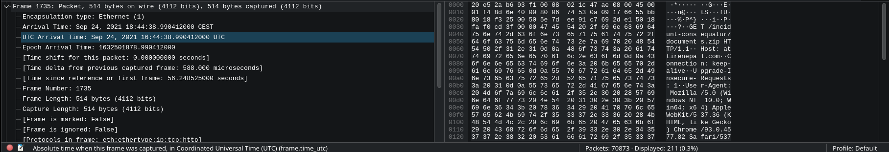
Answer: 2021-09-24 16:44:38
question 2
What is the name of the zip file that was downloaded?
I am going to refer to the previous question, because the first HTTP request was downloading a zip file. As seen in the image, documents.zip is the file being downloaded.
Answer: documents.zip
question 3
What was the domain hosting the malicious zip file?
There are multiple ways of showing the host a file was downloaded from.
We will do it the following way:
> Right-click the first HTTP packet.
> Follow
> HTTP Stream
Or simpler: ctrl + alt + shift + H
This will show us what the client requested and to whom. The domain hosting the zip file is specified in the Host header.
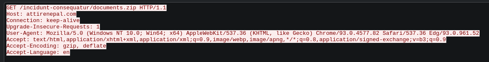
Answer: attirenepal.com
Don't close the HTTP stream yet, you'll need it for question 4, 5 & 6.
question 4
Without downloading the file, what is the name of the file in the zip file?
In the current HTTP stream we can see a file name at the first line of random data:
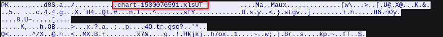
Answer: chart-1530076591.xls
If you want, you can download the zip and see for yourself what's in there. Do so by clicking on File > Export Objects > HTTP, the rest speaks for itself. Be careful with the file as it may contain malicious macros.
question 5
What is the name of the webserver of the malicious IP from which the zip file was downloaded?
The name of the web server is shown in the server response header, as shown in the image.
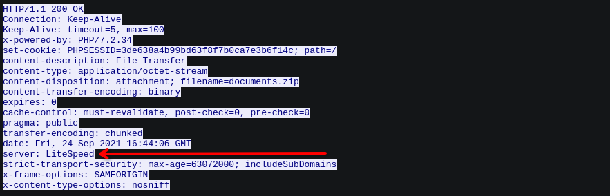
Answer: LiteSpeed
question 6
What is the version of the webserver from the previous question?
The webserver is powered by PHP version 7.2.34 as shown in the x-powered-by header:
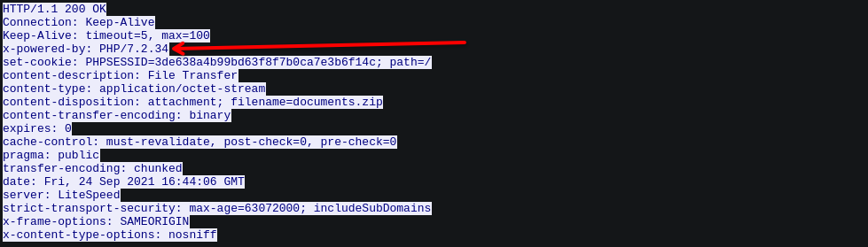
Answer: PHP/7.2.34
question 7
Malicious files were downloaded to the victim host from multiple domains. What were the three domains involved with this activity?
Rather than going through a lot of HTTP packets, I filtered DNS packets and filtered out the odd domains. Filter for DNS packets by entering dns in the search bar.
I found the three domains and listed them in order of finding:
Packet 2422: finejewels.com.au
Packet 2983: thietbiagt.com
Packet 3224: new.americold.com
Answer: finejewels.com.au, thietbiagt.com, new.americold.com
question 8
Which certificate authority issued the SSL certificate to the first domain from the previous question?
So the question is: Who issued the certificate of finejewels.com.au? We can once again filter for DNS packets and follow the UDP stream of the first DNS request for finejewels.com.au. In this Wireshark session we can enter the following filter in the search bar:
└─$ udp.stream eq 77This will result in Wireshark returning 2 DNS packets. The last one contains the DNS response, replying with the IP address of finejewels.com.au:
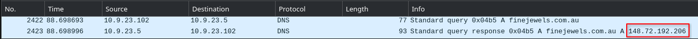
We can use the IP to construct the following filter in Wireshark:
└─$ ip.addr == 148.72.192.206 && tls.handshake.type == 11What this does
ip.addr specifies either the destination or source address.
tls.handshake.type == 11 tells Wireshark to filter for TLS handshakes.
This will return 1 packet. When following the TCP stream, we can clearly see the authority that issued the certificate for this domain:
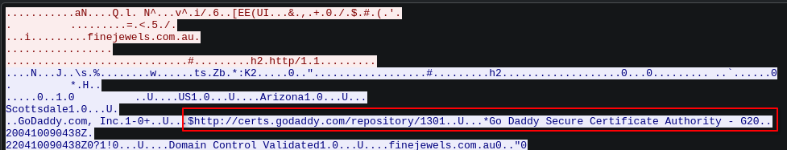
Answer: GoDaddy
question 8
What are the two IP addresses of the Cobalt Strike servers?
Finding 2 IP addresses in a list of 70,873 packets is close to impossible. Therefore, it is best practice to go to Statistics > Conversations and filter IPv4 conversations. I did so too and sorted from highest to lowest packet count:
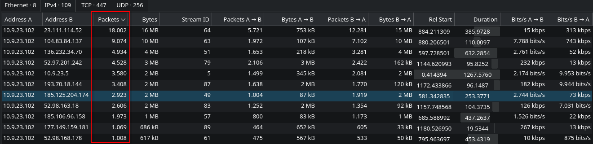
I entered the 11 IPv4 addresses in Virustotal and found 2 Cobalt Strike C2 Servers:
Answer: 185.106.96.158,
185.125.204.174
question 9
What is the Host header for the first Cobalt Strike IP address from the previous question?
We can do this the same way we inspected the HTTP host; by following the TCP stream of the first packet (packet 6323) containing 185.106.96.158. Use the following filter:
└─$ ip.addr == 185.106.96.158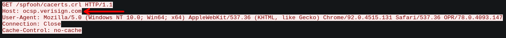
Answer: ocsp.verisign.com
question 10
What is the domain name of the second Cobalt Strike server IP?
When working with domain names and IPs, the first thing that comes to mind is DNS. So, we are using DNS once again to find the domain name belonging to the IP. Use the following filter:
└─$ dns && dns.a == 185.106.96.158It returns packet 6511 containing the DNS response of the domain belonging to the IP 185.106.96.158.
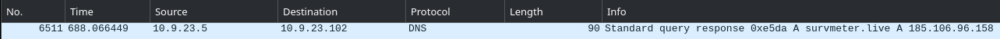
Answer: survmeter.live
question 11
What is the domain name of the second Cobalt Strike server IP?
Same question as before, now use the second Cobalt Strike IP address:
└─$ dns && dns.a == 185.125.204.174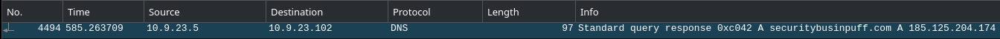
Answer: securitybusinpuff.com
question 12
What is the domain name of the post-infection traffic?
I find this question a bit unclear, however, the hint pointed to POST requests. That being said, let's filter HTTP packets in Wireshark and follow the HTTP stream of the first POST packet:
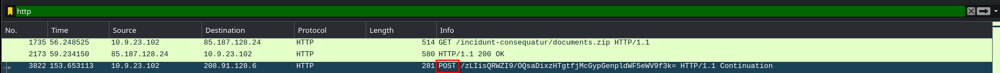
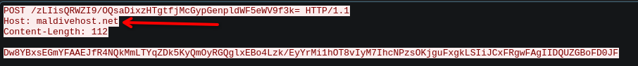
Answer: maldivehost.net
question 13
What are the first eleven characters that the victim host sends out to the malicious domain involved in the post-infection traffic?
The first POST packet being sent from the victim to the C2 server can be filtered using the following filter:
└─$ http && http.host == maldivehost.net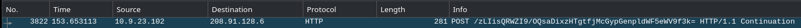
As you can see it sends "/zLIisQRWZI9/OQsaDixzHTgtfjMcGypGenpldWF5eWV9f3k="
The first 11 characters of the data being sent consist of "zLIisQRWZI9"
Answer: zLIisQRWZI9
question 14
What was the length for the first packet sent out to the C2 server?
The length of the packet is actually already visible in the screenshot in question 13:
Answer: 281
question 15
What was the Server header for the malicious domain from the previous question?
The server header of the previous domain can be seen by once again following the HTTP stream of a POST request made to the C2 server. For the sake of clarity, I picked the first POST request again:
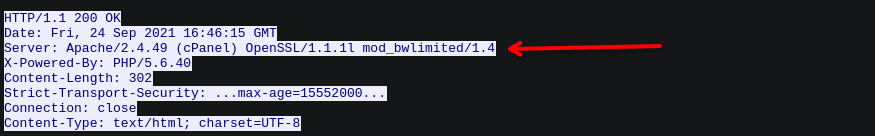
Answer: Apache/2.4.49 (cPanel) OpenSSL/1.1.1l mod_bwlimited/1.4
question 16
The malware used an API to check for the IP address of the victim’s machine. What was the date and time when the DNS query for the IP check domain occurred?
We need to once again filter DNS packets. This time we're looking for an IP service. I scrolled a little past the middle and noticed packet 24147 making a request to "api.apify.org"
This was done at UTC 2021-09-24 17:00:04
Answer: 2021-09-24 17:00:04
question 17
What was the domain in the DNS query from the previous question?
As stated in the previous questions answer, the domain used to fetch IP information was "api.ipify.org"
Answer: api.ipify.org
question 18
Looks like there was some malicious spam (malspam) activity going on. What was the first MAIL FROM address observed in the traffic?
The malware most likely used SMTP for this task. SMTP stands for Simple Mail Transfer Protocol. We can filter SMTP packets the same way we filter DNS and HTTP.
Filtering for smtp, the first mail address is visible at packet 28576.
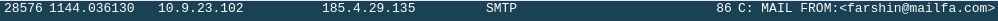
Answer: farshin@mailfa.com
question 19
How many packets were observed for the SMTP traffic?
If you didn't remove the smtp filter, you can still see the amount of captured SMTP packets in the bottom right of the Wireshark window. It states 1439.
Answer: 1439
Wrapping up
Thank you for reading! Have a nice rest of your day.